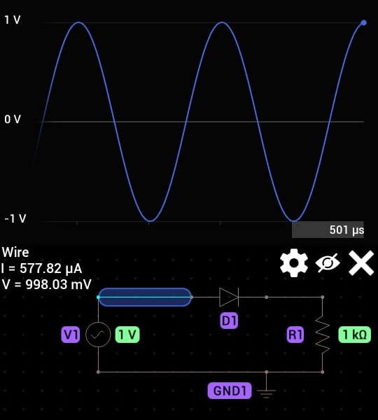
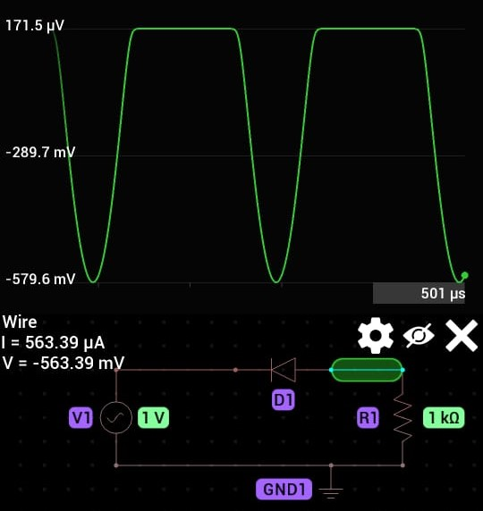

gambar diatas merupakan gambar rangkaian yang menggunakan dioda dengan setting A/C tegangan 1 volt dengan frequensi 1khz, lalu menggunakan resistor dengan hambatan 1k ohm
bentuk sinyal pada A-ground dengan memiliki
maximum 1v
minimum -1v
bentuk sinyall pada B-ground dengan memiliki
max : 579.6
min : -171.5
bentuk sinyal pada A-ground namun Dioda di balikan arahnya. arus nya masih sama karena tidak terpenngarung oleh dioda
bentuk sinyal pada B-ground namun Dioda di ballikan arahnya.
aliranya gelobang nya terbalik arahnya menjadi
max : -171.5
min : 579.6